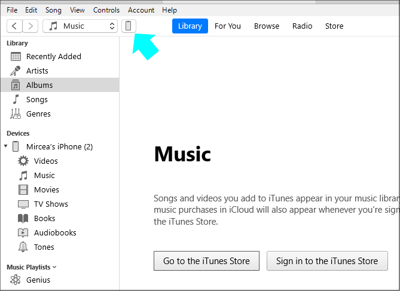
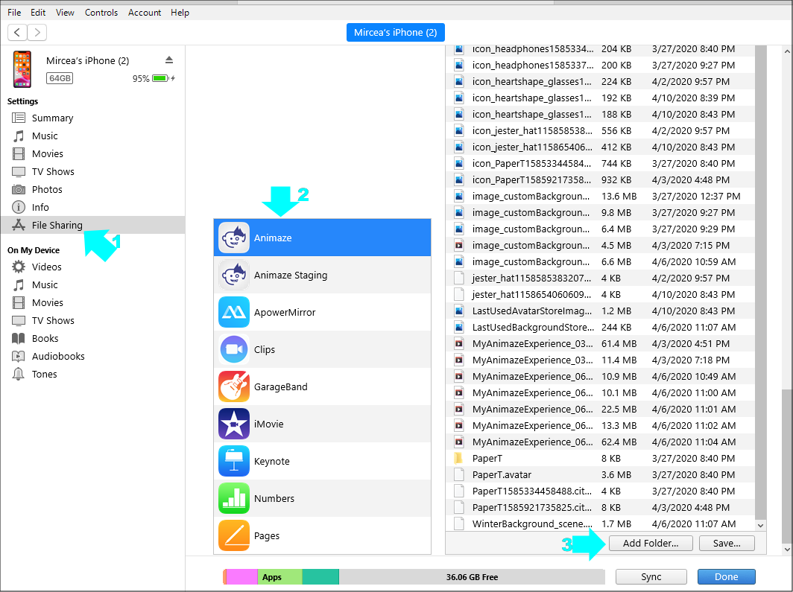
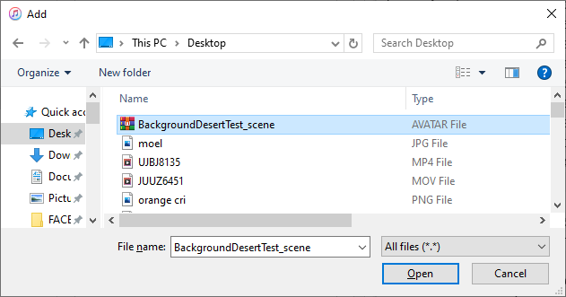
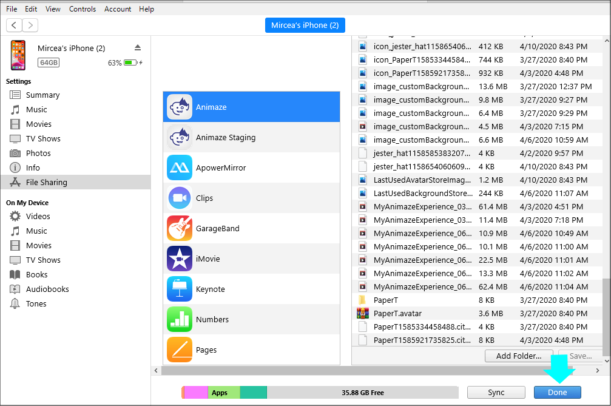
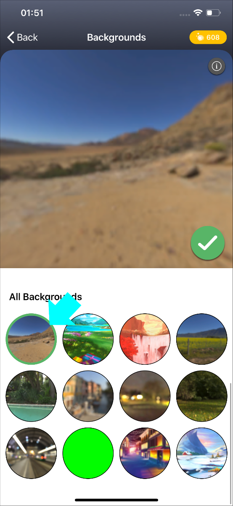

Send your background .avatar file to the Animaze iOS app (on Windows, via iTunes)
The .avatar file format acts like a container which can hold multiple types of avatar content, such as 3D/2D avatars, props, backgrounds.
Follow these steps:
-
Connect your device to the computer and open iTunes. You might be asked to trust your device, choose yes.
-
View your iPhone by clicking on the device's icon in the upper-left corner of the iTunes window

-
Click on (1) File Sharing button in the left menu, then select (2) Animaze app and hit (3) Add Folder

-
Select the *.avatar file to open from the location you have it stored

-
The file has been added to the background gallery of the app, click Done.

-
Restart the Animaze app, and find the newly added avatar in the backgrounds gallery
